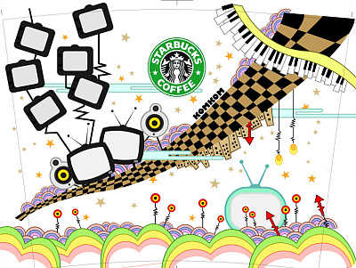
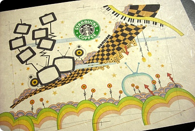
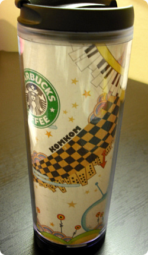
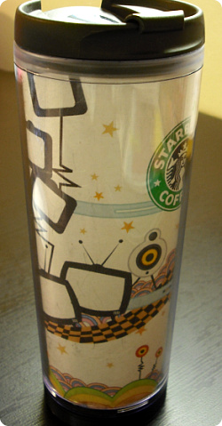
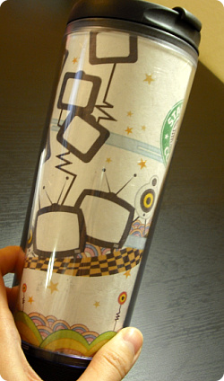
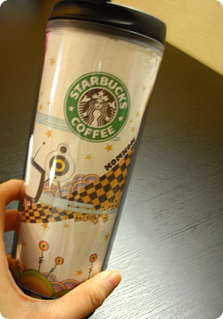

콤콤텀블러 세번째
요즘 벡터일러스트에 재미붙였음 +_+

요것이 원본
벡터일러스트 ctrl+c / cntrl+v 의 위력을 새삼 알게되었다능

주로 세미글로스나 필름지에 출력했었는데
이번엔 exotic paper 도전
한지느낌인데 종이가 제법 두꺼워서 잉크출력에도 잘 버틴다+_+




오랜만에 텀블러속지제작 잼나다+_+
그전에 손으로 그렸던거 슬금슬금 벡터이미지로 바꾸는중
Design your own TUMBLER ^^***